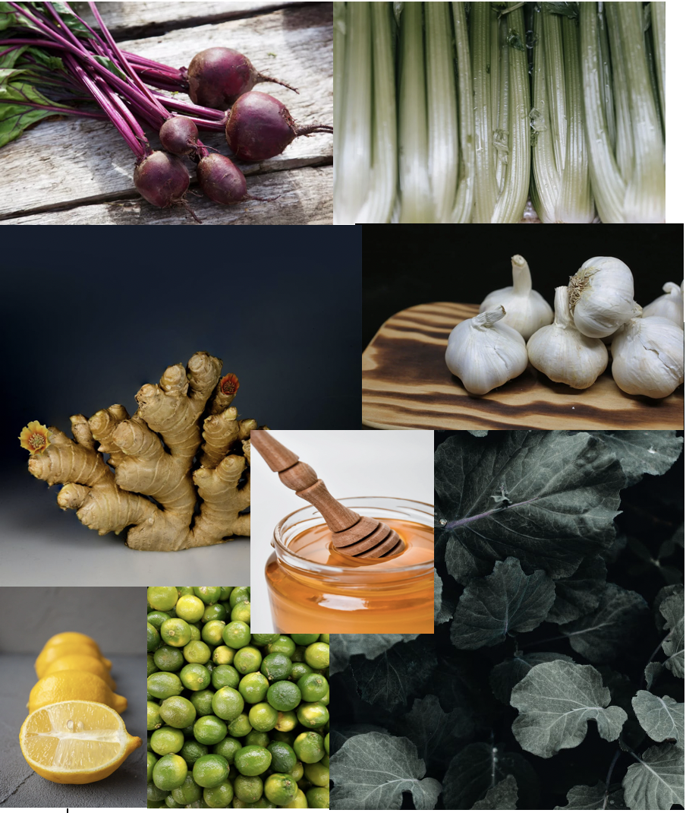

Ginger is high in antioxidants, which protect your body's DNA from stress and harm. They may aid in the prevention of chronic diseases such as high blood pressure, heart disease, and lung disorders, as well as promote good ageing.
How sustainable are we?
1.) Return :
Grubstation's has a 100% recyclable policy. All our bottle and recyled bottles. We have
recyle bins in every of our store. We also make sure to remind our customers.Recycling lowers
the need for new raw materials to be grown, harvested, or extracted from the Earth. As a result,
the harmful disruption and damage to the natural environment is reduced: Fewer trees are cut down,
rivers are diverted, wild creatures are hurt or displaced, and water, soil, and air pollutants are reduced.
2.) Regrow : No product of our is wasted. Every fruit is used for the next customer or if there are left overs
it will be distrubed for free with the app called LeftOvers.
3.) Reduce
We reduce the amount of waste by only making products based on orders per day.Waste contributes to climate change,
pollutes the environment, and wastes more money, energy, and natural resources than most of us know. Small changes
in our daily life can have a big impact on the health of all living beings, as well as the province and planet we call home.
60%
70%
75%
80%
The Ingredients that are of benefit in our juices
All our juices are made with ingredients that are of benefit to to the body. This what we love to do, allow customers enjoy the taste of their drink without knowing how healthy and vitamin rich the contents are. We want to share with you our main ingredients used to supply vitamins in our mixtures. If you have enquires please send us message in the contact page and we will get back to you
Click image to enlage

The Ingrdientes and its benefits
Vitamin C and antioxidants are abundant in limes, which may provide health benefits. Eating limes or drinking lime juice can help with immunity, heart disease risk factors, kidney stone prevention, iron absorption, and skin health.
Kale's health benefits are depicted in this image. Kale is high in fibre, antioxidants, calcium, vitamins C and K, iron, and a variety of other nutrients that can aid in the prevention of a variety of ailments. Antioxidants aid in the removal of undesirable poisons produced by natural processes and environmental stresses.
Lemons are high in vitamin C, soluble fibre, and plant compounds, which provide a variety of health benefits. Lemons may help you lose weight and lower your risk of heart disease, anaemia, kidney stones, digestive problems, and cancer.
Despite its high water content, celery contains a variety of vitamins and minerals, including potassium and calcium, both of which are beneficial to heart health. It also contains folate and vitamin K, which are both necessary for red blood cell production and good blood coagulation.
Immunity is improved. Garlic's presence of antioxidants and sulfur-containing compounds like allicin has been shown in several studies to help reduce inflammation and increase immunological function.
Beetroots are high in fibre, folate (vitamin B9), manganese, potassium, iron, and vitamin C, among other minerals. Beets and beet juice have been linked to a variety of health advantages, including enhanced blood flow, reduced blood pressure, and improved exercise performance.
Honey is largely made up of sugar, but it also contains trace amounts of a variety of vitamins and minerals, as well as a variety of health-promoting plant components.